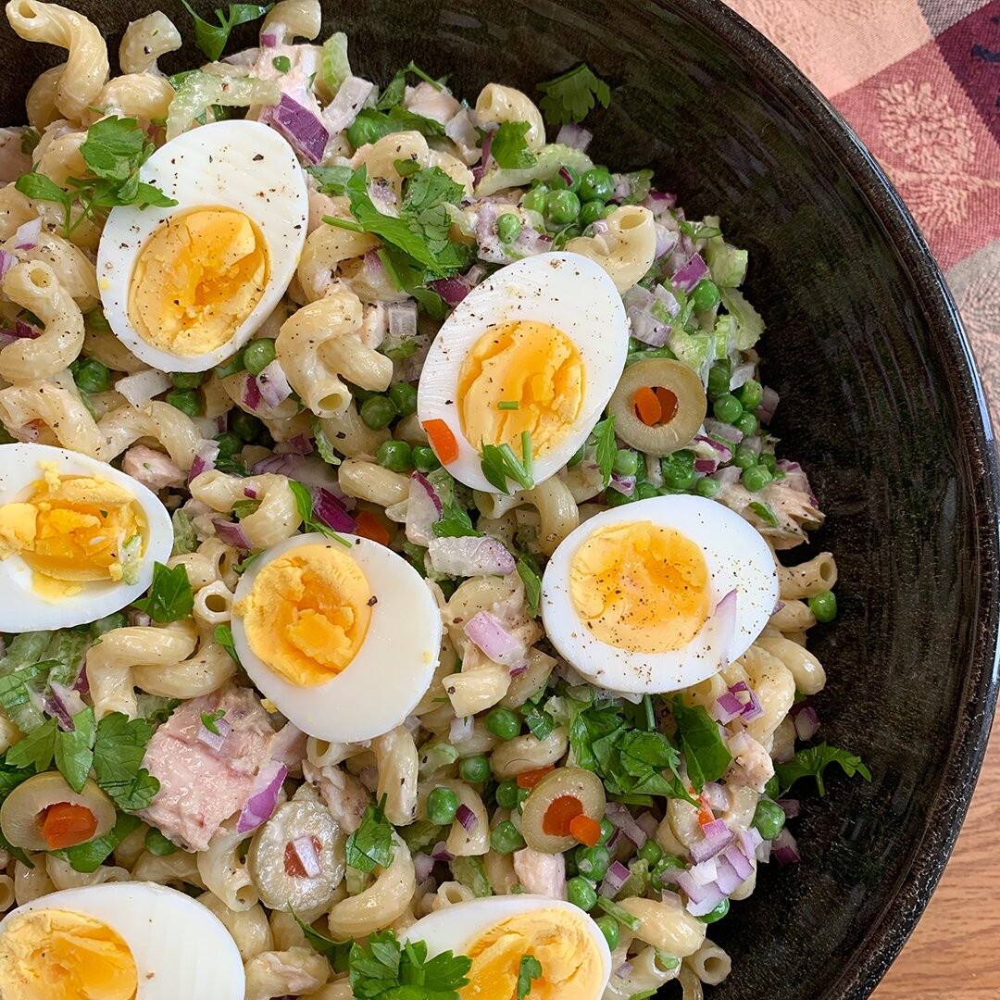

Tuna-pasta salad

Description
tuna-pasta salad; which is a blend of tuna, pasta, mayonnaise and salad,
originated in the U.S.A, specifically in south-carolina. Since then it
has become an international dish and a very popular lunch/dinner due to the
fact it is easy and quick to make.
Ingredients
- 16oz pack of your favourite pasta
- mayonnaise
- 3 table spoons of lemon juice
- 2 table spoons of honey
- 1/2 table spoon garlic powder
- salt
- pepper
- 2 8oz cans of tuna drained
- your choice of vegetables for the salad
the above ingredients is made to serve three adults.
Steps
- step 1) Bring a large pot of lightly salted water to a boil; cook cavatappi at a boil until tender yet firm to the bite, 9 to 10 minutes. Drain and transfer to a large bowl.
- step 2)Whisk mayonnaise, 3 tablespoons lemon juice, honey, garlic powder, salt, and pepper for dressing together in a medium bowl. Set aside.
- step 3)Stir tuna, celery, onion, peas, parsley, olives, and 1 teaspoon lemon juice into pasta. Pour dressing over salad, toss until coated, and add hard-boiled eggs on top. Serve.
We hope you enjoy! we would appreciate feedback in the comment section below.